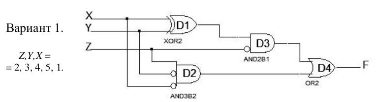
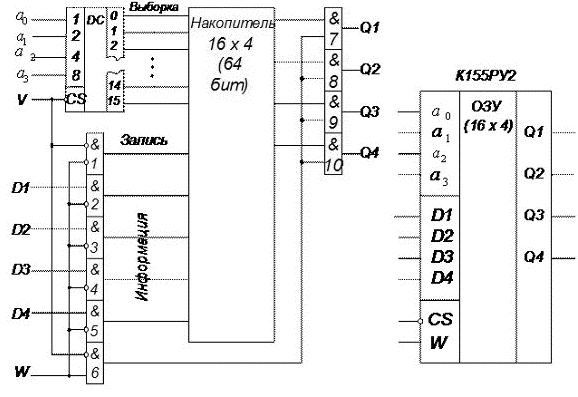

Инструменты:
Построить временную диаграмму работы схемы при заданной последовательности изменений сигналов Z,Y,X на входах. Последовательность задается в виде номеров строк таблицы истинности.
Первый вариант описания временной диаграммы для первых двух элементов последовательности. Блоки config, head и foot обязательные.
{signal: [
['Input',
{name: 'X', wave: 'x01'},
{name: 'Y', wave: 'x1.'},
{name: 'Z', wave: 'x0.'},
],
['Internal',
{name: 'D1', wave: '010'},
{name: 'D2', wave: '0.1'},
{name: 'D3', wave: '010'},
{name: 'D4', wave: '01.'},
],
{name: 'F', wave: '01.'},
],
coheadnfig: { hscale: 2 },
head:{
text:'Вариант 1',
tock: 'начало 2 3 4 5 1',
},
foot:{
tock: 'ZYX 010 011 100 101 001',
},
}
Посмотреть и поредактировать этот пример можно тут
Второй вариант описания временной диаграммы для первых двух элементов последовательности.
{signal: [
['Input',
{name: 'Z', wave: 'x0..'},
{name: 'Y', wave: 'x1..'},
{name: 'X', wave: 'x0.1'},
],
['Internal',
{name: 'D1', wave: '01.0', node: '.a.f'},
{name: 'D2', wave: '0.10', node: '..eg',},
{name: 'D3', wave: '0.1.0', node: '..b.h', phase: 0.5},
{name: 'D4', wave: '0.1.0', node: '..c.i'},
],
{name: 'F', wave: '0..1.0', node: '...d.j', phase: 0.5},
],
edge:[
'a-|->b', 'b->c', 'c-|->d', 'e->d',
'f-|->h', 'h->i', 'i-|->j', 'g-|->j',
],
config: { hscale: 2 },
head:{
text:'Вариант 1',
tock: 'начало 2 _ 3 _ 4 5 1',
},
foot:{
tock: 'ZYX 010 _ 011 _ 100 101 001',
},
}
Посмотреть и поредактировать этот пример можно тут
Руководство по WaveDrom находится тут
КМ155РУ2 - высокоскоростное ОЗУ с емкостью 64 бит (матрица, состоящуя из 16 строк и 4 столбцов. Элементы каждого из столбцов соединены внутренней разрядной линией данных и хранят одноимённые биты всех слов (рисунок 1). Данные ОЗУ можно записывать и считывать. При считывании информации из ОЗУ она не разрушается.
Ячейка памяти состоит из 4-х триггеров (рисунок 2), управляемых общим сигналом.
При CS=0 одна из ячеек, соответствующая выставленному адресу, переходит в рабочее состояние, её сигналы поступают на входы элементов И(7…10).
При CS=1 на всех выходах дешифратора низкие уровни и, следовательно, все триггеры отключены от входных шин накопителя.
При CS=0 и W=0 на выбранную ячейку поступают информационные сигналы с входов D1…D4 и элементом И1вырабатывается сигнал «Запись». Входная информация со входов D1…D4 записывается в ячейку.
При CS=0 и W=1 формируется сигнал «Чтение» и информация из выбранной ячейки читается с выходов Q1…Q4.
Рисунок 1 - Структурная схема и условное обозначение К155РУ2
Рисунок 2 - Пример логической схемы ячейки ОЗУ
Задания
Отчет по работе должна включать:
Микросхема представляет собой оперативное запоминающее устройство статического типа на 64 бита (16 слов по 4 разряда) с произвольной выборкой. (SRAM)
Рисунок 1 - Условное графическое обозначение (а) и цоколевка (б) К155РУ2
1 - вход первого адреса A1;
2 - выход разрешения выборки РВ;
3 - выход разрешения записи РЗ;
4 - выход данных D1;
5 - выход первого усилителя Q1;
6 - выход данных D2;
7 - выход второго усилителя Q2;
8 - общий ("земля");
9 - выход третьего усилителя Q3;
10 - выход данных D3;
11 - выход четвертого усилителя Q4;
12 - выход данных D4;
13 - вход четвертого адреса A4;
14 - вход третьего адреса A3;
15 - вход второго адреса A2;
16 - напряжение питания.
| Режим работы | Вход | Выход Qn | ||
|---|---|---|---|---|
| РВ | РЗ |
Dn | ||
| Запись | Н Н |
Н Н |
Н В |
В Н |
| Считывание | Н | В | х | Qn |
| Запрет записи | В В |
Н Н |
Н В |
В В |
| Отключение выходов |
В | В | х | В |
В некоторых источниках входы РВ и РЗ обозначаются как CS (crystal select) и WE (write enable) соответственно.
Визуализацию числел организовать в двоичном виде c помощью светодиодов.